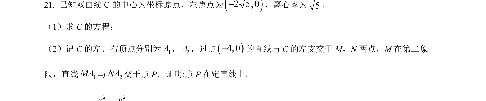
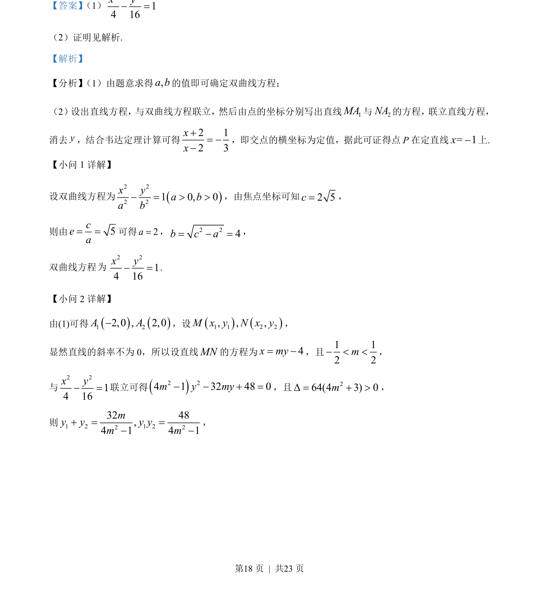
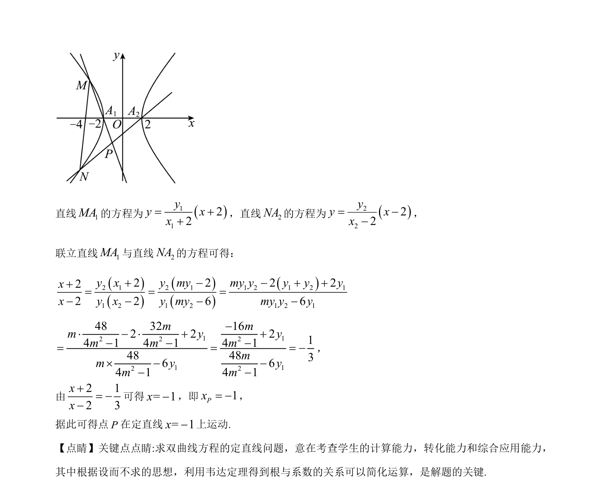

考点：双曲线的标准方程与几何性质 直线与圆锥曲线的位置关系 韦达定理 定值定点问题

本题主要考查双曲线标准方程的求解以及利用直线与双曲线联立，结合韦达定理证明动直线交点在定直线上。


📄 原 PDF 第 18 页：
素材/真题/吉林/2008-2024·（吉林）数学高考真题/2023年高考数学试卷（新课标Ⅱ卷）（解析卷）.pdf
【答案】 （1）
2 214 16x y− =
（2）证明见解析.
【解析】
【分析】 （1）由题意求得,a b的值即可确定双曲线方程；
（2）设出直线方程，与双曲线方程联立，然后由点的坐标分别写出直线1MA与2NA的方程， 联立直线方程，
消去y，结合韦达定理计算可得2 12 3xx+= −−
，即交点的横坐标为定值，据此可证得点P在定直线= 1x−上.
【小问 1 详解】
设双曲线方程为()2 22 21 0, 0x ya ba b− = > >，由焦点坐标可知2 5c=，
则由5cea= =可得2a=， 2 24b c a= − =，
双曲线方程
2 214 16x y− =.
【小问 2 详解】
由(1)可得()()1 22,0 , 2,0A A−，设()()1 1 2 2, , ,M x y N x y，
显然直线的斜率不为 0，所以设直线MN的方程为4x my= −，且1 12 2m− < <，
与
2 214 16x y− =联立可得()2 24 1 32 48 0m y my− − + =，且 264(4 3) 0mD = + >，
则1 2 1 22 232 48,4 1 4 1my y y ym m+ = =− −
，
为